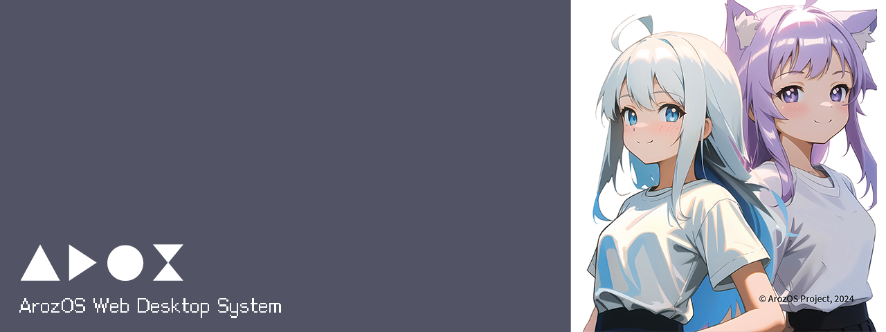

This page describes the AlpNAS platform identity and vendor integration for systems that ship with the AlpNAS desktop preinstalled.
AlpNAS is an Alpine-based diskless NAS platform that uses the ArozOS desktop stack as its native web shell. This page is the right place to publish appliance, vendor or integrator notes for AlpNAS-based systems.
You can find the source of this page under web/SystemAO/vendor/index.html.